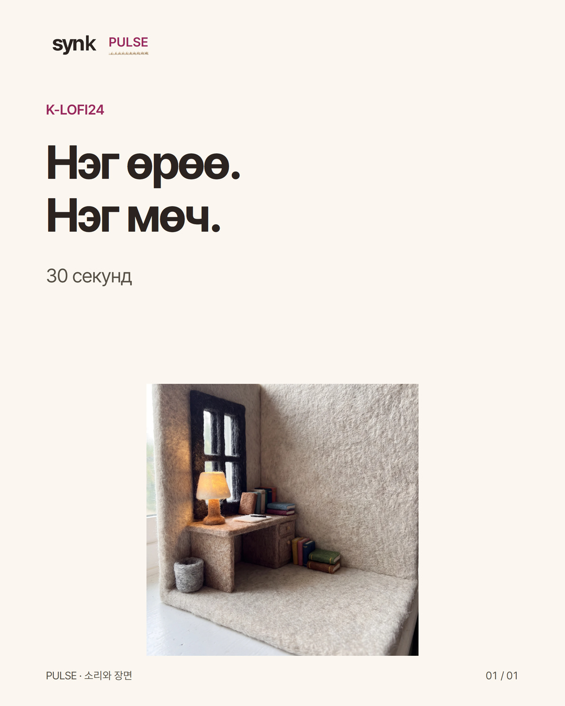
YouTube · @synkkorean · 영상
Нэг өрөө. Нэг мөч.
개설 기록 있음학습이나 등록 행동 없이 완결되는 30초 감상
승인된 밤 장면 한 벌과 소리만 남긴다. 자막·캐릭터·로고를 감상의 중심으로 만들지 않는다.
영상 재생
게시 문안 읽기
Энэ өрөөнд түр саатаарай.
K-LOFI24 сувагт зориулан шинээр бүтээсэн 30 секундийн дүрс, дуут бүтээл. Шууд дамжуулалт эсвэл өмнөх нэвтрүүлгийн хэсэг биш.
Дүрслэл нь бүтээсэн орчин бөгөөд сургуулийн бодит зураг биш.
Энэ мөчид тайлбар ч, хариулт ч хэрэггүй.
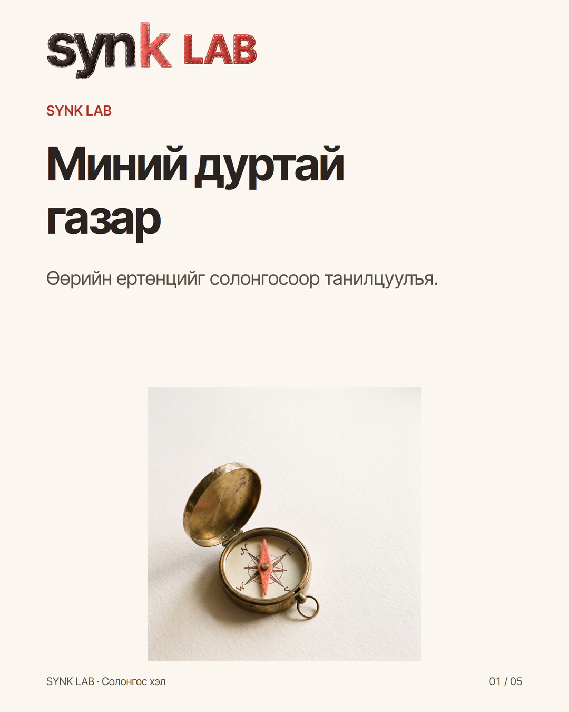
Instagram · @synk.mn · 캐러셀
Миний дуртай газар
개설 기록 있음좋아하는 곳·그 이유·함께 가자는 말을 연결하는 문장 세 개
한 장마다 장소·이유·초대의 역할을 나눈다. 한국어와 몽골어를 짧고 정확하게 짝짓고, 마지막은 본인이 쓰는 카드로 남긴다.
게시 문안 읽기
Та Монголын ямар газрыг найздаа танилцуулах вэ?
Өөрийн дуртай газрыг гурван өгүүлбэрээр танилцуулаарай.
1. Дуртай газраа хэлэх
저는 이곳을 좋아해요.
Би энэ газарт дуртай.
2. Яагаад дуртайгаа хэлэх
조용해서 좋아해요.
Чимээгүй болохоор дуртай.
3. Найзыгаа урих
같이 가볼래요?
Хамт очиж үзэх үү?
Энэ нь найздаа хэлэх энгийн урилга юм.
Өөртөө бичиж үзэх гурван мөр:
Дуртай газар: ______
Шалтгаан: ______
Урилга: ______
Бодит хаяг, хувийн зураг оруулах шаардлагагүй. Өөрийн тэмдэглэлдээ бичиж болно.
Дараа ашиглахаар хадгалаарай. Та ямар газрыг сонгох вэ?
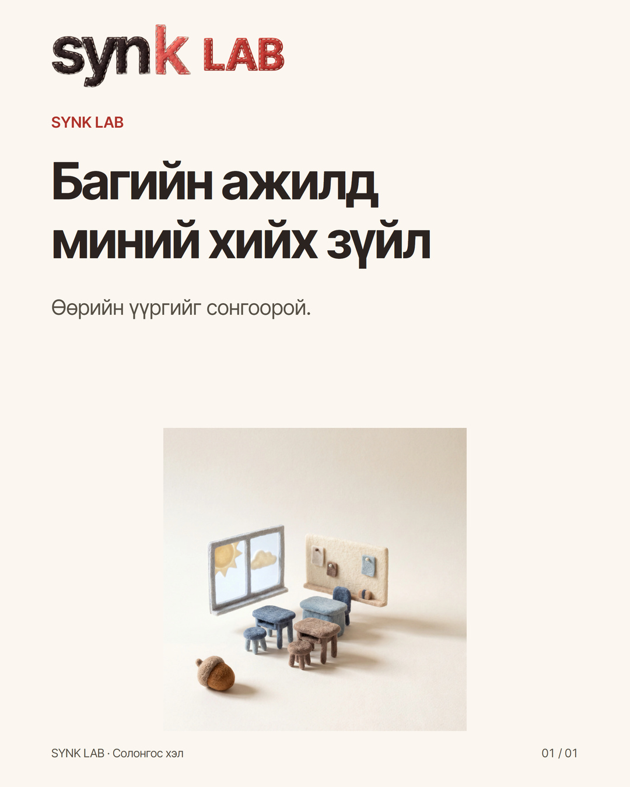
TikTok · @synk.mn · 영상
Багийн ажилд миний хийх зүйл
개설 기록 있음자료 찾기·그림·발표 중 자기 역할을 말하는 한국어
발표만 주인공으로 만들지 않는다. 선택지가 실제 다른 문장으로 이어지며 세 역할의 크기와 대접은 같다.
영상 재생
게시 문안 읽기
Та багийн ажилд ямар үүрэг авах вэ?
Танилцуулга хийхээс гадна мэдээлэл хайх, зураг зурах ажил ч бий. Өөрийн хийх зүйлийг ингэж хэлж болно.
1. Мэдээлэл хайх
저는 자료를 찾아볼게요.
Би мэдээлэл хайж үзье.
2. Зураг зурах
저는 그림을 그릴게요.
Би зураг зуръя.
3. Танилцуулах
저는 발표할게요.
Би танилцуулга хийе.
Өөрт тохирох нэг өгүүлбэрийг сонгоод хэлж үзээрэй. Бодит баг, сургуулийнхаа нэрийг бичих шаардлагагүй.
Дараагийн багийн ажилдаа ашиглахаар хадгалаарай. Та аль ажлыг сонгох вэ?
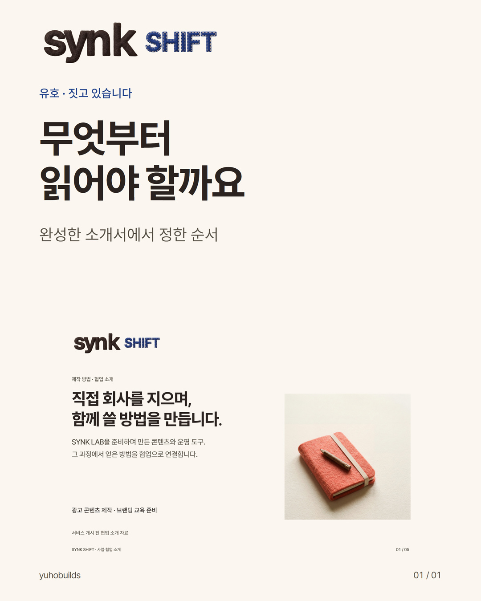
YouTube · @yuhobuilds · 영상
이 소개서는 무엇부터 읽어야 할까요
개설 기록 있음제목·설명·실물의 읽는 순서를 자기 자료에 적용하는 방법
완성한 지면 자체를 증거로 쓴다. 장식이나 도구 화면이 아니라 실제 읽을 크기와 정보의 순서를 보여준다.
영상 재생
게시 문안 읽기
저는 소개서를 만들며, 무엇을 더 넣을지보다 무엇부터 읽힐지를 먼저 정했습니다.
9월 9일 완성한 SYNK 소개서 묶음은 큰 제목 → 핵심 설명 → 대표 실물의 순서로 구성했습니다. 이 영상은 그 완성본을 읽는 제작 기록입니다.
자기 자료에도 다섯 칸을 적어 보세요.
1. 읽는 사람: 누구인가?
2. 쓰는 자리: 휴대폰인가, 발표 화면인가, 종이인가?
3. 먼저 남길 한 가지: 무엇을 기억하면 되는가?
4. 필요한 사실: 판단에 꼭 필요한 조건은 무엇인가?
5. 건넬 파일: 상대가 실제로 열고 쓸 수 있는가?
제목이 방향을 잡고, 설명이 의미를 잇고, 실물이 확인할 대상을 보여주게 합니다. 필요한 조건을 빼거나 작은 글씨로 숨기라는 뜻은 아닙니다.
이번에 확인한 것은 지면의 읽힘·배치·파일입니다. 실제 고객 반응이나 매출 효과는 아직 측정하지 않았습니다.
다음 자료를 만들 때 이 다섯 칸부터 써 보세요. 여러분의 자료에서는 무엇이 먼저 읽혀야 하나요?
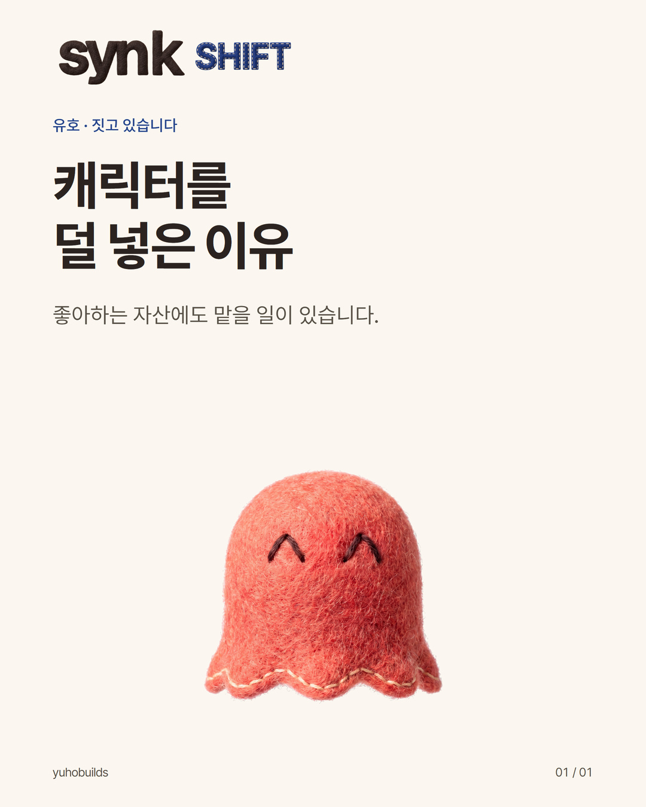
Instagram · @yuhobuilds · 영상
캐릭터를 덜 넣은 이유
개설 기록 있음같은 캐릭터를 반복하기보다 내용과 맞는 소품을 고르는 기준
캐릭터의 수를 품질로 세지 않는다. 승인 소개서에서 줄인 반복과 남긴 의미를 실제 지면으로 보여준다.
파생 원작: 04-yuhobuilds-youtube
영상 재생
게시 문안 읽기
저는 이번 소개서와 캐러셀에서 캐릭터의 반복을 줄였습니다.
좋아하는 자산이라고 모든 장에 같은 역할로 놓지는 않았습니다. 공책은 기록을, 편지는 전달을, 캐릭터는 함께 보는 순간을 맡게 했습니다.
다음 세 가지를 자기 지면에 물어보세요.
1. 이 그림은 어떤 뜻을 보태는가?
2. 앞 장과 같은 이야기를 다시 하고 있지는 않은가?
3. 그림을 덜었을 때 필요한 내용이 더 잘 보이는가?
캐릭터를 적게 쓰는 것이 언제나 정답이라는 뜻은 아닙니다. 그 장면에 필요한 역할이 있으면 쓰고, 반복 장식만 남으면 편집합니다.
화면은 9월 9일 완성한 소개서와 승인 자산입니다. 실제 수공예 작업을 촬영한 기록은 아닙니다.
여러분의 자료에서 그림 하나가 맡고 있는 일은 무엇인가요?
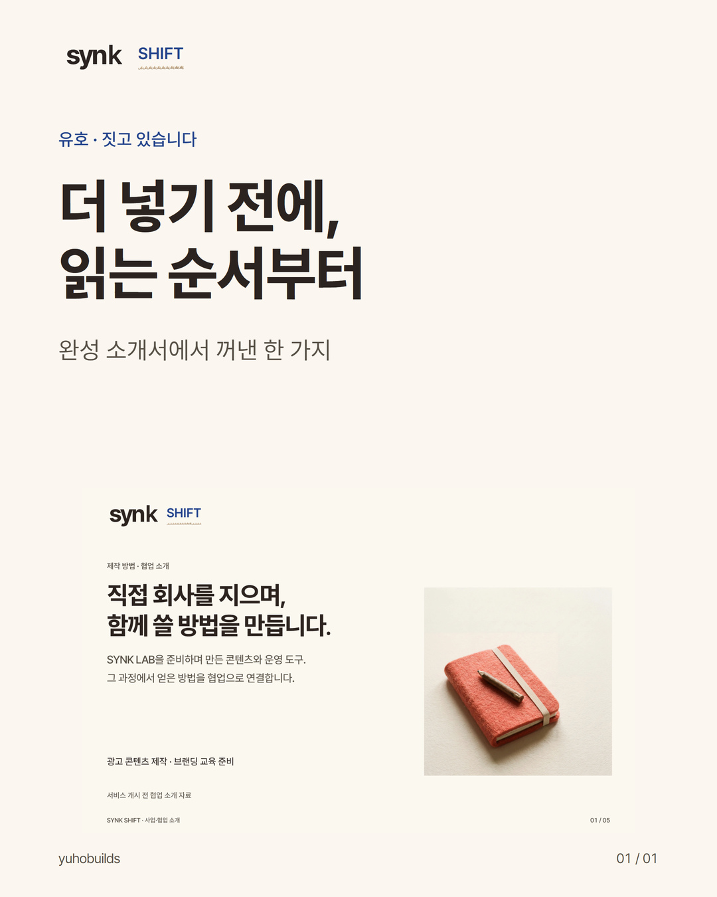
TikTok · @yuhobuilds · 영상
더 넣기 전에, 읽는 순서부터
개설 기록 있음자기 문서의 첫 읽힘을 점검하는 짧은 실행
04의 같은 완성물과 판단을 짧게 편집한다. 별도 TikTok 소재나 새 성과를 만들지 않는다.
파생 원작: 04-yuhobuilds-youtube
영상 재생
게시 문안 읽기
저는 소개서에서 제목 → 설명 → 실물의 순서를 먼저 정했습니다.
자기 자료를 실제로 읽힐 크기로 놓고 다섯 가지를 확인해 보세요.
1. 누가 읽는가?
2. 어디서 읽는가?
3. 무엇을 먼저 기억하면 되는가?
4. 어떤 사실이 꼭 필요한가?
5. 어떤 파일을 건네야 실제로 쓸 수 있는가?
필요한 설명을 숨기라는 뜻은 아닙니다. 같은 뜻의 반복을 덜고, 읽는 순서를 보이게 만드는 작업입니다.
이 영상은 완성 소개서 제작기의 짧은 편집본입니다. 고객 반응·매출 효과를 보여주는 사례는 아닙니다.
지금 만드는 자료의 첫 문장은 무슨 일을 맡고 있나요?
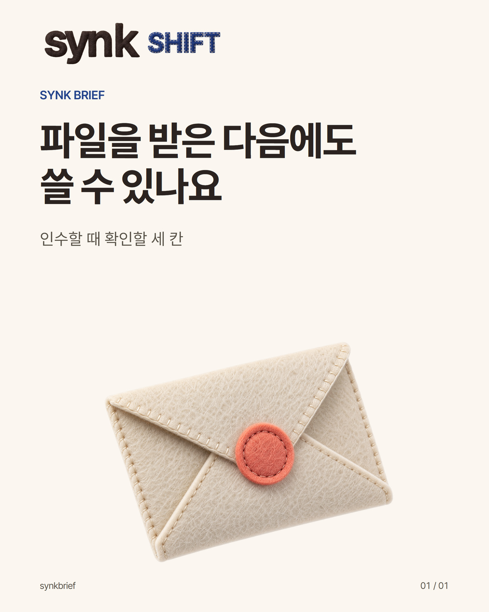
YouTube · @synkbrief · 영상
파일을 받은 다음에도 쓸 수 있나요
개설 기록 있음원본·바꾸는 곳·확인법을 빠뜨리지 않는 인수 틀
파일을 예쁘게 보이는 데서 끝내지 않고 받은 뒤의 사용까지 설계한다. 실제 고객 사례 대신 명시한 안내문 예시로 보여준다.
영상 재생
게시 문안 읽기
받는 사람이 혼자 다시 쓸 수 있어야 인수가 끝납니다.
안내문 한 장을 건넨다고 가정해 보세요. 예쁜 완성 이미지 외에 세 칸을 확인합니다.
1. 원본
어떤 파일을 열어야 하나요? 필요한 그림·서체·다른 파일은 함께 있나요?
2. 바꾸는 곳
어떤 문구와 그림을 수정할 수 있나요? 바꾸면 안 되는 조건과 권리도 표시했나요?
3. 확인법
수정한 뒤 무엇을 보면 되나요? 실제 사용 크기에서 내용·글자·연락 경로를 확인할 수 있나요?
복사해 쓰는 인수 메모
원본: ______
바꾸는 곳: ______
확인법: ______
고객에게 주지 않는 원본이나 지원을 기본 포함으로 약속하라는 뜻은 아닙니다. 실제 계약·사용권·제공 범위 안에서 이 세 칸을 채웁니다.
이 콘텐츠는 안내문 인수의 설계 예시입니다. 특정 고객에게 납품한 결과나 서비스 실적을 뜻하지 않습니다.
다음에 파일을 건넬 때 같이 써 보세요. 받는 사람이 가장 먼저 물을 질문은 무엇일까요?
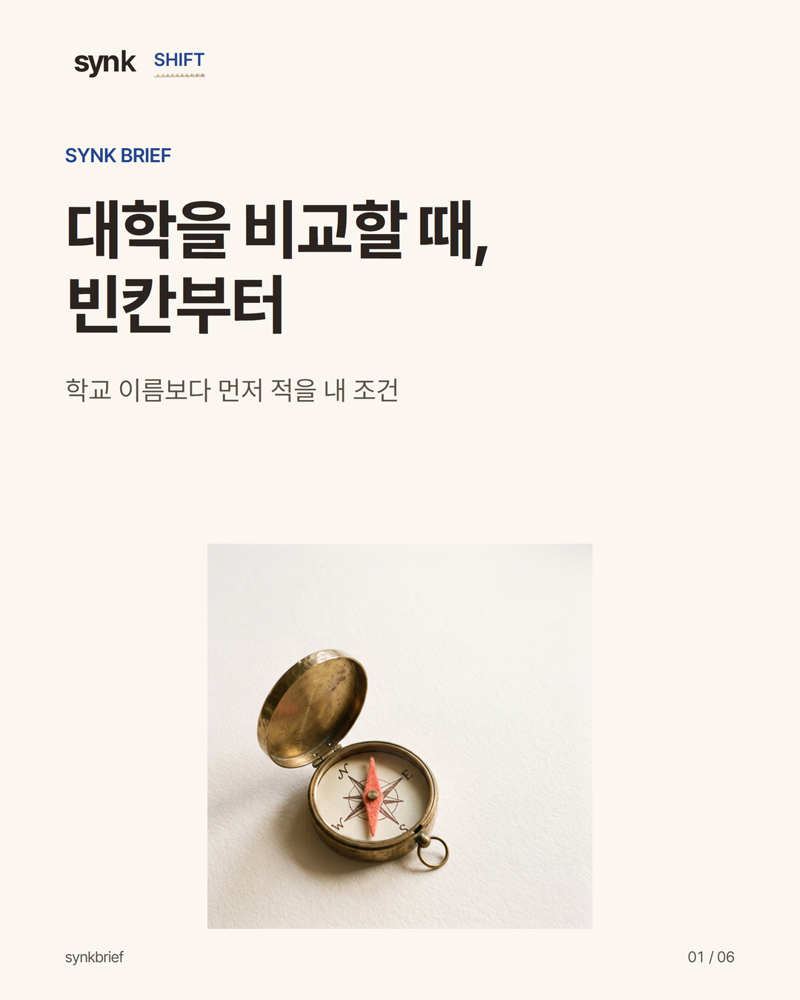
Instagram · @synkbrief · 캐러셀
대학을 비교할 때, 빈칸부터
개설 기록 있음학교 순위를 대신하지 않고 자기 조건·원문·미확인을 구분하는 비교표
대학 로고와 순위 대신 빈칸을 제공한다. 정보를 채우지 못한 자리를 감추지 않고 실제 선택의 기준으로 남긴다.
게시 문안 읽기
유학을 준비하는 사람마다 먼저 확인할 조건이 다릅니다.
대학 이름을 줄 세우기 전에 아래 빈칸부터 적어 보세요.
1. 나의 목적
배우고 싶은 분야: ______
살펴볼 과정: ______
2. 수업과 준비
수업에서 쓰는 언어: ______
해당 과정의 공식 지원 요건: ______
내가 더 준비할 것: ______
3. 비교하는 범위
비교 기간: ______
포함한 비용 항목: ______
아직 확인하지 못한 비용 항목: ______
기간과 포함 범위가 다르면 총액만 나란히 비교하지 않습니다.
4. 원문과 시점
해당 학기 공식 안내: ______
확인한 날짜: ______
담당 기관에 다시 물을 것: ______
5. 남아 있는 질문
내게 꼭 필요한 조건: ______
아직 모르는 것: ______
다음에 확인할 곳: ______
모르는 항목은 0이나 ‘문제없음’으로 채우지 마세요. 확인하지 못했다고 그대로 남깁니다.
이 자료는 비교를 위한 빈 양식입니다. 특정 대학 추천·입학 자격 판정·비자 안내·합격 보장이 아닙니다. 실제 지원에는 해당 학기의 공식 안내와 담당 기관 확인이 필요합니다.
가족과 같이 볼 수 있도록 저장해 두세요. 여러분이 가장 먼저 채울 빈칸은 무엇인가요?
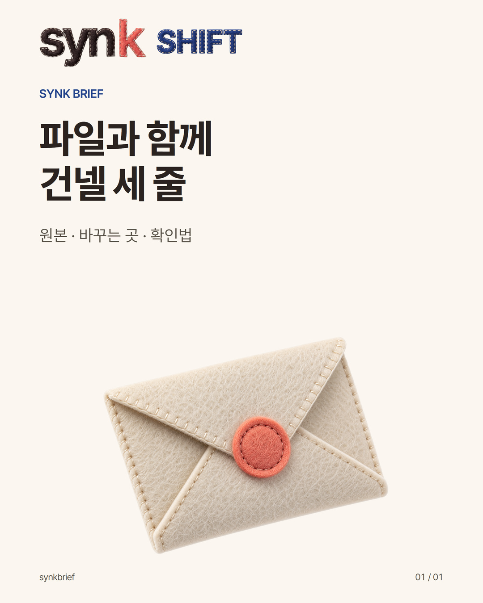
TikTok · @synkbrief · 영상
파일과 함께 건넬 세 줄
개설 기록 있음다음 사람이 혼자 쓰도록 돕는 인수 메모
07의 같은 인수 원작을 짧게 편집한다. 영상 길이를 줄이되 사용 조건과 설계 예시 표시는 남긴다.
파생 원작: 07-synkbrief-youtube
영상 재생
게시 문안 읽기
받는 사람이 다시 쓸 수 있도록, 파일과 함께 세 줄을 건네세요.
원본: 무엇을 열고 어떤 자산이 함께 필요한가?
바꾸는 곳: 어디를 수정할 수 있고 어떤 조건을 지켜야 하는가?
확인법: 수정 뒤 내용·글자·연락 경로를 어떻게 확인하는가?
복사해서 쓰기
원본: ______
바꾸는 곳: ______
확인법: ______
제공하지 않는 파일·권리·지원을 기본 포함으로 적지는 않습니다. 실제 계약과 제공 범위 안에서 채우는 메모입니다.
안내문 인수의 설계 예시이며, 특정 고객의 납품 사례가 아닙니다. 같은 원작의 긴 설명은 SYNK BRIEF 영상에 있습니다.
여러분은 파일을 받은 뒤 어떤 질문을 가장 자주 하나요?
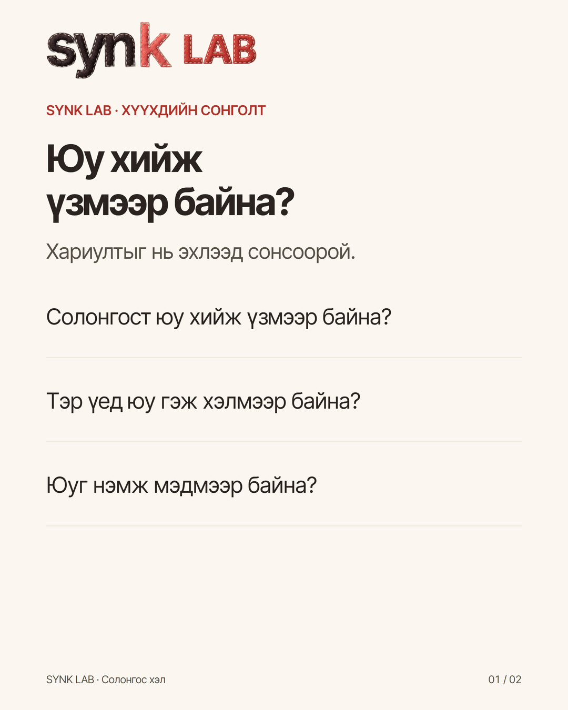
Facebook · facebook.com/synkworld · 캐러셀
Хамт ярилцах хуудас
개설 기록 있음자녀의 선택과 가족의 확인 질문을 구분하는 두 장의 대화 양식
설득 문구보다 가족이 직접 쓸 수 있는 두 면을 준다. 학생의 바람을 먼저 듣고 보호자가 사실을 함께 확인한다.
게시 문안 읽기
SYNK LAB энэ хоёр хуудсыг гэр бүлээрээ ярилцахад зориуллаа.
Хүүхэд юуг хүсэж байгааг сонсох асуулт, гэр бүлээрээ нягтлах асуулт хоёр өөр байж болно.
Хүүхдийн сонголт
1. Солонгост юу хийж үзмээр байна?
2. Тэр үед солонгосоор юу гэж хэлмээр байна?
3. Юуг нэмж мэдмээр байна?
Гэр бүлийн асуулт
1. Ямар бэлтгэл хэрэгтэй вэ?
2. Юуг хамт шалгах вэ?
3. Хэнээс лавлах вэ?
Хариултаа гэртээ ярилцаж, өөртөө тэмдэглэж болно. Нэр, сургууль, хувийн түүхээ сэтгэгдэлд бичих шаардлагагүй. Аль нэг асуултыг алгасаж болно.
Энэ бол гэр бүлийн ярианд зориулсан хоосон загвар. Бодит сурагчийн түүх, элсэлтийн зөвлөгөө, сургалтын үр дүнгийн тайлан биш.
Хамт хэрэглэхээр хадгалаарай. Та аль асуултаас эхлэх вэ?
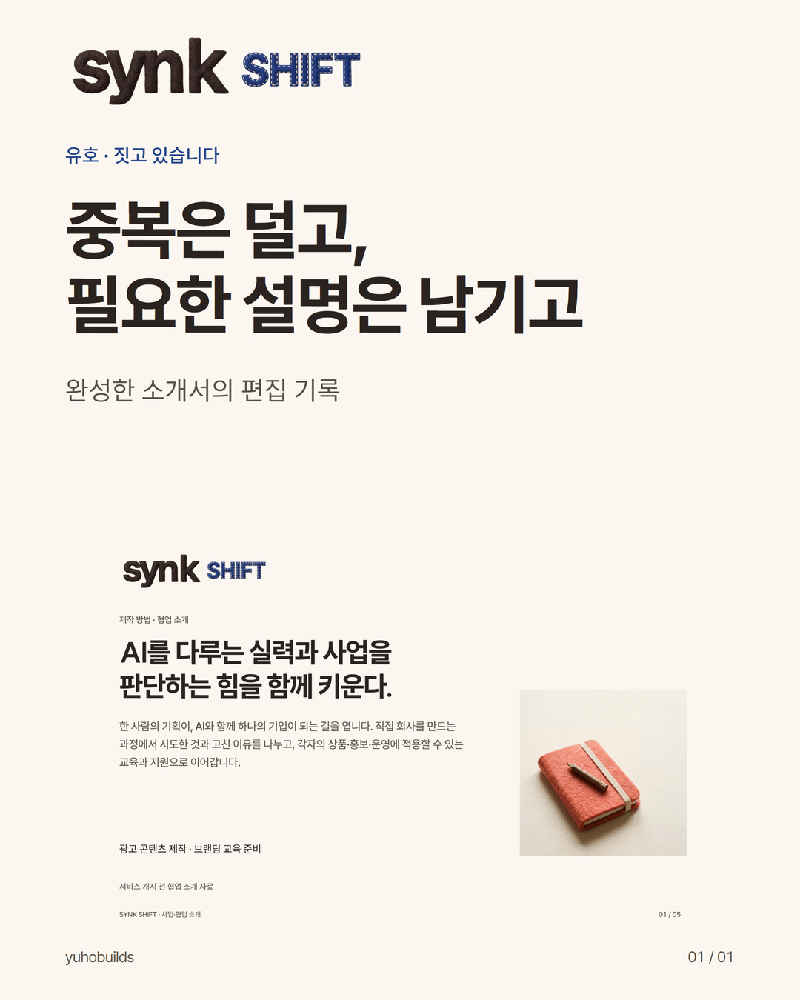
Threads · @yuhobuilds · 글 + 이미지
설명을 덜어내며 남긴 것
준비용 · 계정 확인 전중복과 필수 설명을 구분하는 세 가지 점검
‘말을 줄여야 고급’이라는 규칙을 만들지 않는다. 실제로 줄인 중복과 남긴 필수 의미를 구분한다.
파생 원작: 04-yuhobuilds-youtube
게시 문안 읽기
저는 이번 소개서에서 같은 뜻의 반복을 줄였습니다.
필요한 설명까지 덜어낸 것은 아닙니다.
제목은 방향을, 본문은 이유를, 실물은 확인할 대상을 맡게 했습니다.
고칠 때 보는 세 가지:
· 이 문장은 앞 문장과 같은 뜻인가?
· 이 설명을 빼면 판단할 조건이 사라지는가?
· 처음 보는 사람이 다음 행동을 알 수 있는가?
말을 적게 쓰는 것보다, 같은 말을 덜 반복하는 쪽을 골랐습니다.
여러분의 자료에는 어떤 설명이 꼭 남아야 하나요?
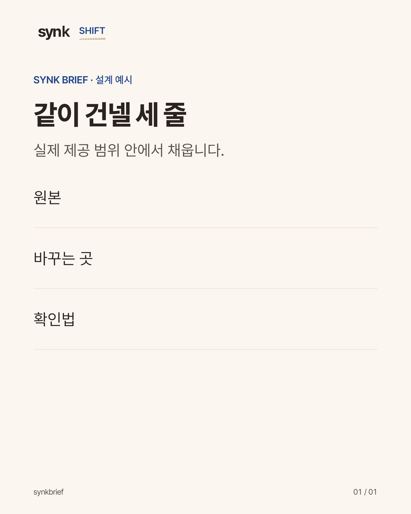
Threads · @synkbrief · 글 + 이미지
인수할 때 함께 건넬 세 줄
준비용 · 계정 확인 전본문을 그대로 복사해 쓸 수 있는 인수 메모
지식을 설명하는 글이 아니라 실제로 채워 쓰는 세 줄을 준다. 개인정보 제출이나 다운로드 동선 없이 끝낸다.
파생 원작: 07-synkbrief-youtube
게시 문안 읽기
받는 사람이 다시 쓸 수 있도록, 파일과 함께 세 줄을 건네세요.
원본: 어떤 파일을 열고 무엇이 함께 필요한가?
바꾸는 곳: 어디를 수정하고 어떤 조건을 지켜야 하는가?
확인법: 수정 뒤 무엇을 확인하면 되는가?
복사해서 채우기
원본: ______
바꾸는 곳: ______
확인법: ______
안내문 인수의 설계 예시입니다. 실제 계약·사용권·제공 범위 안에서 채우세요.
여러분이 파일을 받은 뒤 가장 먼저 묻는 것은 무엇인가요?
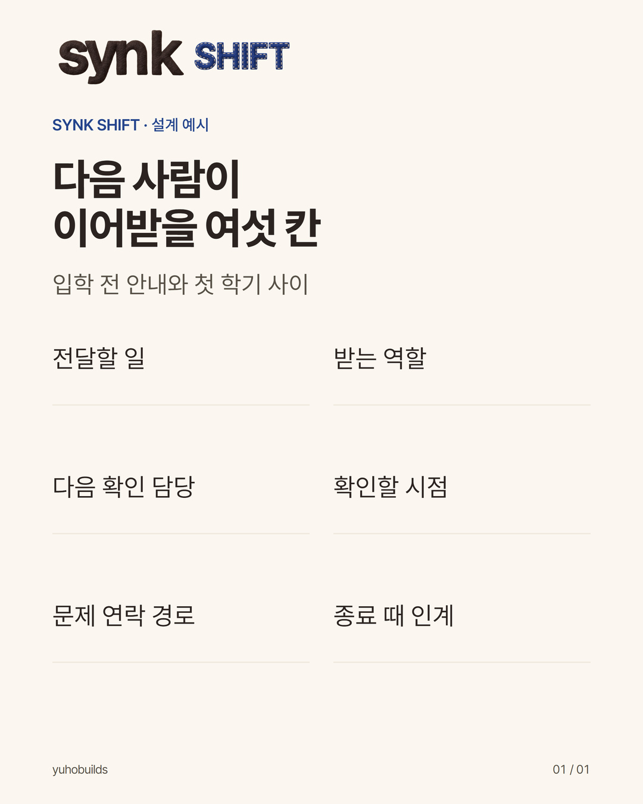
LinkedIn · yuhobuilds · 이미지
입학 전 안내와 첫 학기 사이
개설 기록 있음업무 전달과 수신·후속 확인을 구분하는 기관 인계표
기관 로고나 모집 실적 대신 책임이 읽히는 빈 양식을 제공한다. 학생 명단이 아니라 업무 경계를 보여준다.
게시 문안 읽기
기관 담당자가 자료를 보냈다는 사실과, 다음 담당자가 일을 이어받았다는 사실은 다릅니다.
입학 전 안내와 첫 학기 지원 사이의 업무를 검토할 때 사용할 여섯 칸을 정리했습니다. 실제 대학과 운영 중인 시스템을 소개하는 것이 아니라, 협력 업무를 설계할 때 함께 채울 수 있는 예시입니다.
1. 전달할 일
무슨 안내나 확인을 넘기는가? 단순 발송과 처리 완료를 구분합니다.
2. 받는 역할
누가 받아야 하는가? 개인의 이름보다 먼저 담당 역할을 적습니다.
3. 다음 확인 담당
그다음 상태를 누가 확인하는가? 모두의 일이 되면서 누구의 일도 아니게 되는 자리를 찾습니다.
4. 확인할 시점
어떤 날짜나 업무 사건을 기준으로 다시 보는가? 실제 합의되지 않은 응답시간을 약속으로 쓰지 않습니다.
5. 문제 연락 경로
정보가 없거나 처리가 멈췄을 때 어디로 문의하는가? 연락처를 영업 자료에 임의로 공개하지 않습니다.
6. 종료 때 인계
무엇을 돌려주고, 무엇의 접근을 종료하며, 남는 업무는 누가 맡는가? 자료의 권리·보관·처리 범위는 실제 계약과 절차로 정합니다.
함께 채울 메모
전달할 일: ______
받는 역할: ______
다음 확인 담당: ______
확인할 시점: ______
문제 연락 경로: ______
종료 때 인계: ______
이 양식에는 실제 학생의 이름·학습 원문·비자 정보가 필요하지 않습니다. 현재 협약 대학, 모집 실적, 이탈 예측 또는 입학 결과를 주장하는 자료도 아닙니다.
기관 협력의 신뢰를 ‘맡겨 주세요’라는 말보다, 상대가 판단할 수 있는 책임과 인계의 구조로 설명하고자 합니다.
여러분의 업무에서 가장 자주 비어 있는 칸은 어디인가요?
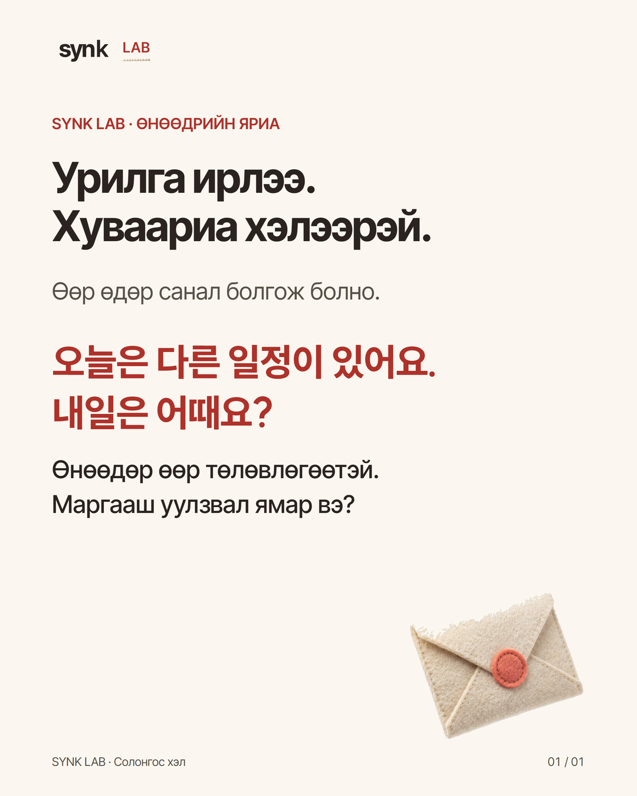
Telegram · t.me/synkmn · 이미지
Урилга ирлээ. Хуваариа хэлээрэй.
개설 기록 있음오늘 일정과 다른 날 제안을 부드럽게 잇는 두 문장
단순 거절 표현이 아니라 관계를 이어갈 다음 선택을 준다. 복사 가능한 본문으로 이미지 없이도 쓸 수 있다.
게시 문안 읽기
Найз тань өнөөдөр уулзъя гэжээ. Та өөр төлөвлөгөөтэй бол ингэж хэлж болно.
오늘은 다른 일정이 있어요.
Өнөөдөр өөр төлөвлөгөөтэй.
내일은 어때요?
Маргааш уулзвал ямар вэ?
Эхний өгүүлбэрээр өнөөдрийнхөө хуваарийг хэлнэ. Дараагийн өгүүлбэрээр өөр өдөр санал болгоно.
Хоёрыг холбоод хэлж үзээрэй:
오늘은 다른 일정이 있어요. 내일은 어때요?
Өнөөдөр өөр төлөвлөгөөтэй. Маргааш уулзвал ямар вэ?
Өөрийн бодит уулзалт, найзын нэрийг нийтлэх шаардлагагүй. Жишээ яриагаар давтаж болно.
Дараа хэрэглэхээр хадгалаарай. Та ямар өдөр санал болгох вэ?

Substack · synklab.substack.com · 유호 · 짓고 있습니다 · 편지 + 표지
소개서 한 장을 완성하며 덜어낸 것
개설 기록 있음완성 소개서의 한 판단과 자기 자료에 쓰는 다섯 칸 작업지
제작 후기를 가짜 고객 질문으로 열지 않는다. 실제 완성한 지면의 중복 편집과 인수 경험을 차분하게 설명한다.
파생 원작: 04-yuhobuilds-youtube
게시 문안 읽기
유호 · 짓고 있습니다 | 창업 섹션용 편지
소개서를 완성하며, 무엇을 더 넣을지보다 무엇을 덜 반복할지 고민했습니다.
제목은 방향을, 설명은 의미를, 실물은 확인할 대상을 맡게 했습니다.
이번 편지에는 자기 자료에 바로 써볼 다섯 칸 작업지를 함께 담았습니다. 고객 반응이나 매출 효과를 보고하는 글은 아닙니다.
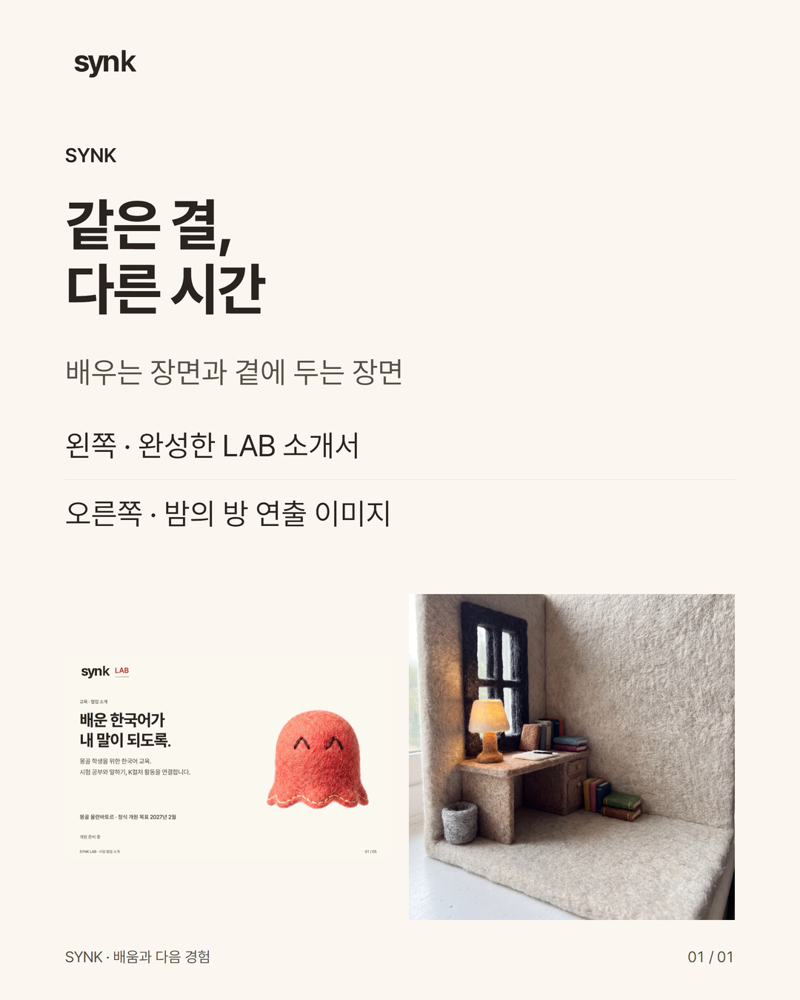
Instagram · SYNK Instagram · 희망 @synk.im / 대안 @synkim · 이미지
같은 결, 다른 시간
준비용 · 계정 확인 전같은 표현 문법이 다른 사람의 시간에 맞게 쓰이는 이유
교육면과 밤 장면 두 벌만 나란히 둔다. 모든 사업·엔진을 한 장에서 설명하지 않고 서로 다른 쓰임을 보인다.
게시 문안 읽기
SYNK는 같은 결을 서로 다른 시간에 놓습니다.
왼쪽은 완성한 LAB 교육 소개서 지면을 이미지로 만든 것입니다. 오른쪽은 감상을 위해 연출한 밤의 방입니다.
교육의 순간에는 선택하고 써볼 것이 남아야 합니다. 감상의 순간에는 작품 자체로 머물 수 있어야 합니다. 같은 자산을 쓴다고 같은 경험을 요구하지는 않습니다.
소개서 지면과 밤 연출 이미지를 나란히 두었습니다. 실제 학원 시설이나 학생의 수업을 촬영한 사진이 아닙니다. 교육 서비스와 작품의 현재 제공 범위는 각각의 안내에서 확인합니다.